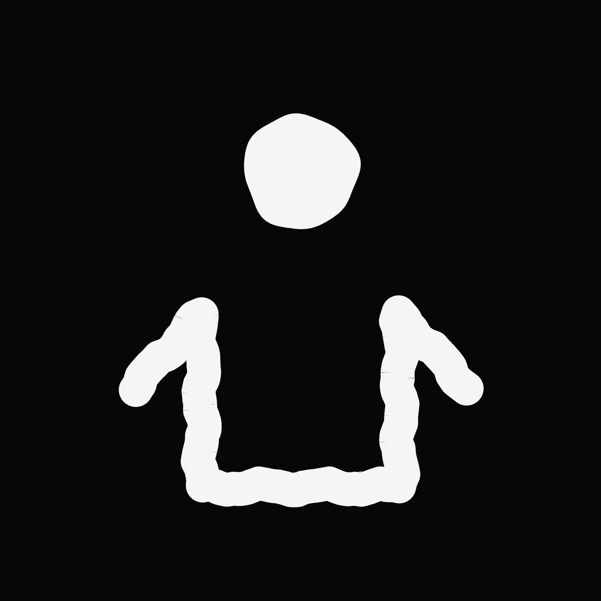

pause
capture
restart
seed
random
mutation
0%
rule
Conway · B3/S23
HighLife · B36/S23
Day & Night · B3678/S34678
Maze · B3/S12345
Seeds · B2/S–
Replicator · B1357/S1357
speed
140
structure ≥
10
background
dots
accent
light
dark
Sonification
off
smooth
10
gen
volume
−12
dB
default
random
● rec
Data source
population
birth rate
death rate
net change
cluster count
spatial drift
color ratio
Musical parameter
filter cutoff
volume
pitch
reverb
panning
timbre
note trigger
Instrument
pad synth
pluck
bass drone
— all —